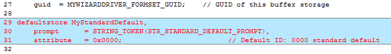
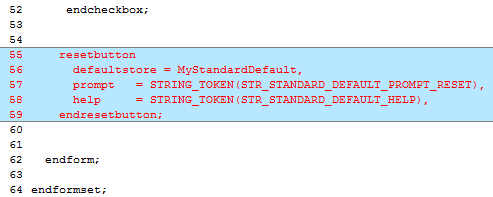
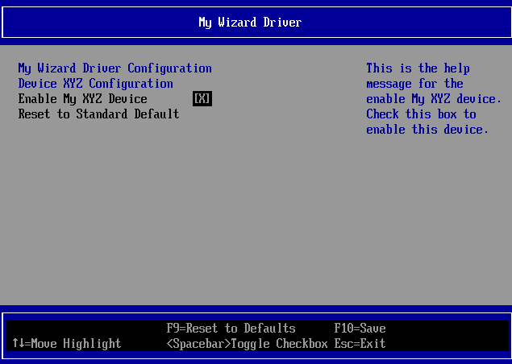
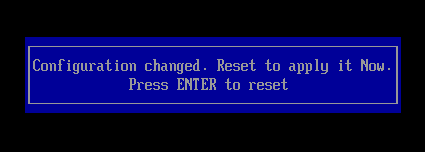

Lab 4. Updating the Menu: Reset Button
In this lab, you’ll learn how to add a resetbutton to your driver’s form menu. It’s time to add more configuration fields to your menu, enabling users to modify more fields now that you’ve built a driver that 1) saves data from forms into NVRAM 2) updates data from the .VFR forms and 3) builds into the platform drivers.
The next set of labs will update .VFR, MyWizardDriver.vfr, and UNI MyWizardDriver.uni string files to incrementally add a reset button (Lab 4), pop-up box (Lab 5), string name (Lab 6), and numeric hex value (Lab 7) to your driver’s form menu:
1). Update the MyWizardDriver.vfr file
2). Add the following code (as shown below after the “GUID” definition Apprx. Line 29): MyStandardDefault,
prompt = STRING_TOKEN(STR_STANDARD_DEFAULT_PROMPT),
attribute = 0x0000; // Default ID: 0000 standard default

3). Add the folowing code before the “endform” (as shown below Approx. Line 55):
resetbutton
defaultstore = MyStandardDefault,
prompt = STRING_TOKEN(STR_STANDARD_DEFAULT_PROMPT_RESET),
help = STRING_TOKEN(STR_STANDARD_DEFAULT_HELP),
endresetbutton;

4). Save MyWizardDriver.vfr
5). Update the MyWizardDriver.uni file
6). Add the following strings at the end of the file to support the “STR_“ referenced added in the .vfr file:
#string STR_STANDARD_DEFAULT_PROMPT #language en "Standard Default"
#string STR_STANDARD_DEFAULT_PROMPT_RESET #language en "Reset to Standard Default"
#string STR_STANDARD_DEFAULT_HELP #language en "This will reset all the Questions to their standard default value"
7). Save MyWizardDriver.uni
Build and test MyWizardDriver
- Open the Visual Studio Command Prompt
- Type build
- Type build run
- At the UEFI Shell prompt,type exit

- Now at the setup front page menu, select “Device Manager”
- Press “Enter” to enter “Device Manager”
- Inside the Device Manager menu press the down arrow to “My Wizard Driver Sample Formset” Press "Enter"
- Access the My Wizard Driver menu and notice the item “Reset to Standard Default” 
- Press Down Arrow to “Reset to Standard Default”
- Press “Enter" to select
- Notice the “Configuration changed” message at the bottom of the menu
- To Exit Press “Escape” then “Y”
- To Exit the “Device Manager” Page: Press “Escape”
- Press Up Arrow to “Continue”
Observe: Notice that since this change requires a reset, the Nt32 will exit out completely.  - Press “Enter” to return to the Visual Studio Command Prompt

For any build issues copy the solution files from C:\Fw\LabSolutions\LessonE.4
NOTE: Del Directory C:\fw\edk2\Build\NT32IA32\DEBUG_VS2010x86\IA32\MyWizardDriver before the Build command to build the MyWizardDriver Clean.